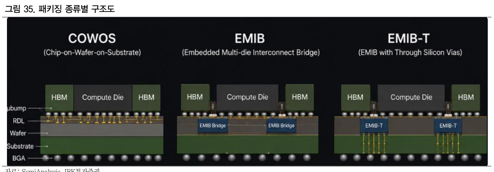
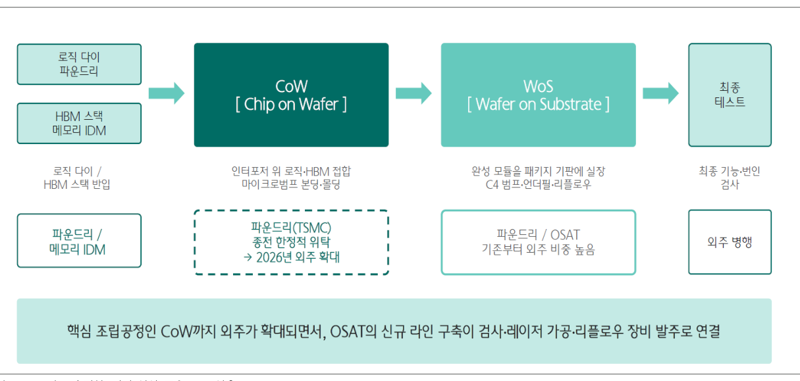

반도체후공정 — 조연에서 독립 변수로: 첨단패키징 병목 + 메모리 후공정 외주화
한눈에 보기
결론 3줄
- AI 가속기는 CoWoS(2.5D) 캐파, 메모리는 HBM에 밀려난 범용 후공정 캐파가 병목
- 패키징·테스트는 전공정 캐펙스의 부속이 아니라 별도 금액·별도 일정으로 투자되는 축이 됨
- 국내 OSAT 수혜는 첨단패키징보다 메모리 범용 후공정 외주와 테스트 강도 상승에서 먼저 옴
| 핵심 숫자 | 값 | 의미 | 출처 |
|---|---|---|---|
| CoWoS 월 캐파 | 75K → 130K → 210K(2025~27말) | 공급 부족 지속 | (SK증권, 2026-06-04) |
| CoWoS 월 캐파(보수) | 115K(2026말) → 175K(2028) | 추정치 하향 | (IBK투자증권, 2026-11-02) |
| CoWoS 중 OSAT 비중 | 11%(2025) → 14%(2026E) → 20%(2027E) | 외주 확대 | (IBK투자증권, 2026-11-02) |
| 테스트 장비 시장 | 153억달러(2026, +31.0%) → 208억달러(2028) | 조립·패키징(9.6%)의 3배+ | (유안타증권, 2026-11-11, SEMI 인용) |
| 메모리 후공정 거점 투자 | P&T7 19조원·천안·온양 56조원 | + 베트남 1차 15억달러 | (하나증권, 2026-09-02) |
| DRAM 증가율 격차(2026E) | 웨이퍼 +8.5%·Die +15.2%·Bit +21.5% | 후공정 부담 > 웨이퍼 | (IBK투자증권, 2026-11-02) |
CoWoS 월 캐파 시점: 2025년 말 → 2026년 말 → 2027년 말 / 테스트 장비 성장률 = YoY, 조립·패키징 장비 성장률 9.6% 대비 / 거점: SK하이닉스 청주 P&T7, 삼성전자 천안·온양, 삼성 베트남 테스트 공장 1차 / 후공정 부담이 웨이퍼보다 빠르게 증가
flowchart LR AI["AI 가속기<br/>GPU·ASIC·서버 CPU"] --> AREA["패키지 면적↑<br/>(레티클 5.5x→40x)"] AREA --> COWOS["CoWoS 캐파 병목<br/>→ OSAT·EMIB·CoPoS로 분산"] MEM["메모리<br/>Die·Bit 증가"] --> HBM["HBM 적층<br/>메모리사 내재화"] MEM --> GEN["범용 DRAM·NAND 후공정<br/>→ OSAT 외주"] HBM --> TEST["칩당 테스트 강도↑<br/>(I/O 2배·단수↑)"] GEN --> TEST COWOS --> PRICE["가격 인상<br/>CoWoS 15~20% 논의"] TEST --> TEQ["테스트 장비·부품 수요"]
업황 지표 (2026-09)
| 지표 | 값 | YoY | 판정 | 성격·귀속 |
|---|---|---|---|---|
| 반도체 생산지수 | 229.9 | +8.6% | 개선 | 동행 · 반도체후공정 |
| 반도체 출하지수 | 198.6 | +3.1% | 개선 | 동행 · 종합반도체 |
| 반도체 재고지수 | 107.9 | +19.8% | 악화 | 동행 · 종합반도체 |
- 생산지수 +8.6% = “웨이퍼 투입 증가 → 후공정 물량 증가”와 같은 방향 (통계청 산업활동동향, 2026-09)
- 재고지수 +19.8%(악화) = 출하보다 생산이 빠름 → 물량 논리의 반대 신호 ⚠
① 기술 기초
요약
- 후공정 = 패키징 + 테스트, 미세화 한계로 “보호·연결” 공정에서 “성능을 만드는” 공정이 됨
- 와이어본딩 → 플립칩 → 팬아웃 → 2.5D → 3D 순으로 진화, 2.5D/3D가 가장 빠르게 성장
후공정이 하는 일
| 구분 | 내용 | 출처 |
|---|---|---|
| 패키징 | 절단(다이싱) → 부착(본딩) → 밀봉(몰딩) → 외부 연결 | — |
| 테스트 | 웨이퍼·패키지·모듈 상태에서 불량 선별 | — |
| 역할 변화 | 미세화 한계 → GPU·HBM·I/O 한 패키지 통합이 좌우 | (한화투자증권, 2026-09-16) |
| 출발점 | DRAM 비트 밀도 10년 100배+ → 최근 10년 2배 | (대신증권, 2026-09-01) |
| OSAT | 패키징·테스트 외주 전문 업체 | — |
- 역할 변화: 패키지 통합 방식이 성능·전력 효율 좌우 / 출발점: 미세화 한계효용 감소(비트 밀도 과거 10년 100배 이상)
- OSAT = Outsourced Semiconductor Assembly and Test (ASE·Amkor·JCET, 국내 하나마이크론·SFA반도체·두산테스나 등)
패키징 기술 진화
| 세대 | 연결 방식 | 구조 | 대표 사례 | 핵심 병목 |
|---|---|---|---|---|
| 와이어본딩 | 금·구리 와이어로 패드-기판 연결 | 2D, 단일 칩 | 범용 DRAM·NAND 패키지 (IBK투자증권, 2026-11-02) | I/O 수·속도 한계 |
| 플립칩(FC) | 칩 뒤집어 범프(솔더볼)로 직결 | 2D, FC-BGA/FC-CSP | GPU·CPU용 FC-BGA 기판 (iM증권, 2026-06-02) | 기판 대면적·고다층화 → 09_반도체부품소재 |
| 팬아웃(FO, WLP/PLP) | 칩 바깥까지 RDL 펼쳐 단자 확보 | 2D~2.xD | TSMC InFO(모바일 AP) (IBK투자증권, 2026-11-02) | 대면적 배선 균일도·휨 |
| 2.5D | 인터포저 위 로직·HBM 나란히 배치 | 수평 집적 | TSMC CoWoS·Intel EMIB (KB증권, 2026-07-07) | 인터포저 면적(레티클 배수), 캐파 |
| 3D | 칩 위 칩 수직 적층(TSV → HB) | 수직 집적 | HBM(TSV)·TSMC SoIC (유안타증권, 2026-11-11) | 열, 접합 수율, 테스트 |
와이어본딩 사례에 NAND 적층용 본딩와이어 포함 / 팬아웃: 기판 없이 웨이퍼·패널 위 배선, 차세대 WMCM이 InFO-PoP 대체 / 2.5D 인터포저 = 실리콘 또는 RDL, 사례 TSMC CoWoS-S/R/L·Intel EMIB·삼성 I-Cube / 3D: TSV·마이크로범프 → 하이브리드 본딩(HB), 사례 HBM·TSMC SoIC·Intel Foveros·삼성 X-Cube
첨단패키징 시장 추정 — 기관마다 범위가 다름
| 추정 | 규모 | 성장률 | 출처 |
|---|---|---|---|
| Yole | 540억달러(2025) → 1,090억달러(2031e) | 2.5D/3D 21% 최고(2025~31 CAGR) | (삼일PwC 경영연구원, 2026-10-26, Yole 인용) |
| Mordor Intelligence | 575억달러(2026) → 901억달러(2031) | CAGR 9.4% | (신한투자증권, 2026-08-11) |
| SEMI | 378억달러(2023) → 695억달러(2029) | CAGR 11% | (대신증권, 2026-09-01) |
-
Yole: 6년간 약 2배, CAGR 2.5D/3D 21% > FO 14% > FCBGA 10% > FCCSP 6% > SiP 4% > WLCSP 2% / SEMI: 2028년 기존 패키징 추월
-
⚠ “첨단패키징” 범위가 달라 절대값 비교 불가 → 2.5D/3D가 가장 빠르다는 방향만 공통

출처: IBK투자증권, 2026-11-02, p.34 (원자료 SemiAnalysis)
테스트 공정 흐름
flowchart LR subgraph W["① 웨이퍼 테스트 (EDS/Sort)"] W1["프로버 + 프로브카드<br/>+ 테스터(ATE)"] --> W2["웨이퍼 번인<br/>(HBM KGD 선별)"] end subgraph H["HBM 전용 구간"] H1["TSV·박막화·범프"] --> H2["적층·본딩<br/>MR-MUF / TC-NCF / 하이브리드"] --> H3["적층 후 스택 테스트<br/>(At-speed, KGSD)"] end subgraph P["② 패키지 테스트"] P1["번인<br/>(고온·고전압 스트레스)"] --> P2["코어 테스트<br/>(Low Frequency)"] --> P3["I/F 스피드 테스트"] end subgraph M["③ 모듈 테스트"] M1["DIMM·SSD 조립"] --> M2["모듈·시스템 테스트<br/>외관검사(AVI)"] end W --> H --> X["2.5D 패키지 통합<br/>(CoWoS 등)"] W --> D["다이싱·조립<br/>(범용 DRAM)"] --> P --> M
구성: 하나증권(2026-09-02) DDR5 vs HBM 후공정 흐름 + 대신증권(2026-09-01) 테스트 3단계 재구성
| 단계·장비 | 핵심 | 출처 |
|---|---|---|
| 웨이퍼 테스트 | 프로브카드 필수(핀 없음), 보통 2~3회 접촉 | (대신증권, 2026-09-01) |
| 패키지 테스트 | 테스트 소켓(소모품, 형상별 전용 설계) | (대신증권, 2026-09-01) |
| CLT | 번인 + 저주파 검사를 한 챔버에서 처리 | (한화투자증권, 2026-09-02) |
| CLT 효과 | 이송 단계 생략 → 검사 시간·설치 면적 절감 | (한화투자증권, 2026-09-02) |
| CLT 사양 | 2개 챔버·48개 보드·최대 11,520개 칩 병렬 | (IBK투자증권, 2026-11-02) |
| CLT 효율 | 기존 저주파 테스터 대비 약 20배 | (IBK투자증권, 2026-11-02) |
CLT = Chambered Low-frequency Tester / 소켓은 수만~수십만 회 접촉 후 교체
| 테스트 단계 | 테스터 | 프로버·핸들러 | 프로브카드·소켓·보드 | 테스트 수탁(OSAT) |
|---|---|---|---|---|
| 웨이퍼 | Advantest·Teradyne·와이씨·디아이 | TEL·Accretech·세메스·쎄믹스 | FormFactor·Technoprobe 등 | 두산테스나·에이팩트·네패스아크 |
| 패키지 | 디아이·엑시콘·유니테스트 | 테크윙·세메스·Cohu | 소켓: 리노공업·ISC 등 | SFA반도체·하나마이크론 등 |
| 모듈 | 엑시콘·유니테스트·네오셈(SSD) | — | — | SFA반도체·윈팩 |
디아이 = 번인 / 웨이퍼 프로브카드: FormFactor·Technoprobe·MJC·코리아인스트루먼트·티에스이, STF 샘씨엔에스 / 패키지 소켓: 리노공업·ISC·티에스이·티에프이, 번인보드 티에프이·타이거일렉 / 패키지 OSAT: SFA반도체·하나마이크론·윈팩·에이팩트
출처: 하나증권, 2026-09-02, p.37 도표52. 장비 상세는 07_반도체장비, 소켓·프로브카드 소재는 09_반도체부품소재
② 전방 수요
요약
- CoWoS 수요는 가속기 “대수”가 아니라 “면적”으로 늘어남 → 레티클 14배 이상이면 웨이퍼당 2개 이하
- 메모리는 웨이퍼 < Die < Bit 순으로 빨리 늘어 후공정 부담이 전공정보다 큼
- HBM은 메모리사가 직접, 범용은 외주로 이원화 → OSAT 물량의 원천
AI 가속기 → 첨단패키징 수요
xychart-beta title "레티클 배수별 웨이퍼당 인터포저 수 (개)" x-axis ["1.0x", "2.0x", "3.3x", "4.0x", "5.5x", "7.5x", "9.5x", "14x", "40x"] y-axis "개" 0 --> 70 line [62, 28, 16, 12, 9, 6, 5, 2, 1]
출처: IBK투자증권, 2026-11-02, p.30 (원자료 TSMC·ASE·MediaTek)
- 레티클 5.5배 = 웨이퍼당 약 9개, 14배 이상 = 2개 이하, SoW-X(40배) = 웨이퍼 1장에 패키지 1개 (IBK투자증권, 2026-11-02)
| 플랫폼 | 패키징 | GPU 다이 | HBM 스택 | 인터포저 면적 | 웨이퍼당 패키지(수율 미반영) |
|---|---|---|---|---|---|
| H100 | CoWoS-S | 1개(~814mm²) | 5(+더미 1) HBM3 | ~2,500mm²(3×) | ~25개 |
| B200 | CoWoS-L | 2개(~800mm²) | 8 HBM3E | ~2,831mm²(3.3×) | ~20개 |
| R200(Rubin) | CoWoS-L + SoIC | 2개(~858mm²)+I/O 2개 | 8 HBM4 | ~4,719mm²(5.5×) | ~12개 |
출처: SK증권, 2026-06-04
CoWoS 수요 주체 비중 (%) (IBK투자증권, 2026-11-02, Bloomberg 인용)
xychart-beta title "CoWoS 수요 비중(%) — 위: AI GPU+CPU, 아래: Custom ASIC" x-axis ["2025", "2026E", "2027E"] y-axis "%" 0 --> 80 line [70, 66, 63] line [26, 32, 34]
수요 비중 표
| 수요 주체 | 2025 | 2026E | 2027E |
|---|---|---|---|
| AI GPU+CPU | 70% | 66% | 63% |
| Custom ASIC | 26% | 32% | 34% |
NVL72 랙당 HBM 탑재량 (TB) (IBK투자증권, 2026-11-02, NVIDIA 인용)
xychart-beta title "NVL72 랙당 HBM (TB)" x-axis ["GB200", "GB300", "Vera Rubin", "Rubin Ultra 2H27 환산"] y-axis "TB" 0 --> 80 line [13.5, 20.7, 20.7, 72]
| 수요 신호 | 내용 | 출처 |
|---|---|---|
| 서버 CPU 외주 | 차세대 서버 CPU → TSMC만으로 부족 → OSAT 외주 | (유안타증권, 2026-11-11) |
| 2027년 물량 | TSMC CoWoS 완판, NVIDIA 60~70% 선점 | (SK증권, 2026-05-28) |
| ⚠ 하방 변수 | Rubin Ultra 레티클 4→2·HBM 16→12단안 | (iM증권, 2026-06-18) |
- 서버 CPU = AMD Venice·NVIDIA Vera 등, 외주처 ASE/SPIL·Amkor / 축소안 배경: CoWoS-L 면적 한계(물리 최대 8,150mm²)·16단 HBM4E 수율
메모리 → 후공정(패키징·테스트) 물량
| DRAM 증가율 | 2026E | 2027E |
|---|---|---|
| 웨이퍼 생산 | +8.5% | +5.8% |
| Die 출하 | +15.2% | +11.3% |
| Bit 출하 | +21.5% | +19.2% |
출처: IBK투자증권, 2026-11-02, p.21 (Omdia 인용)
- 패키징 부담은 Die 수, 테스트 시간은 Bit 용량에 비례 (IBK투자증권, 2026-11-02)
HBM 교환비(같은 비트당 웨이퍼 배수) 가정 (하이투자증권, 2026-11-04)
xychart-beta title "HBM 교환비 (배)" x-axis ["2025", "2026", "2027", "2028"] y-axis "배" 0 --> 4 line [2.4, 2.8, 3.5, 3.8]
| HBM 후공정 부담 | 값 | 출처 |
|---|---|---|
| 웨이퍼 사용 | DRAM 대비 2~3배 | (한화투자증권, 2026-09-02) |
| HBM 웨이퍼 비중 | 18%(2025) → 42%(2028) | (하이투자증권, 2026-11-04) |
| HBM 비트 비중 | 8% → 16% | (하이투자증권, 2026-11-04) |
| 전환비 | HBM4 3:1 → HBM4E 4:1~5:1 가능 | (대신증권, 2026-09-01) |
| 단수 | 12단 → 16단 = 코어 Die 약 33%↑ | (IBK투자증권, 2026-11-02) |
| I/O | HBM4 2,048개 = HBM3E(1,024개)의 2배 | (IBK투자증권, 2026-11-02) |
| 범용 서버 DRAM(2026E) | 서버 출하 +11.3% | (IBK투자증권, 2026-11-02) |
| 서버당 DRAM(2026E) | 1,032GB → 1,435GB(+39.1%) | (IBK투자증권, 2026-11-02) |
| 서버 DRAM 비트(2026E) | +54.8% | (IBK투자증권, 2026-11-02) |
| eSSD | 2026년 출하 +43~45% → NAND 테스터 수요 | (하나증권, 2026-09-02) |
- 단수 증가 → KGD 선별·적층 후 검사 모두 증가 / I/O 2배 → 칩당 테스트 부담 증가
적층 단수 로드맵 = 테스트 강도 상승 로드맵 (하나증권, 2026-09-02)
| 구분 | 2024~2025 | 2026 | 2027~ |
|---|---|---|---|
| 삼성 V-NAND | V8 236단 | V9 286단 · V10 400단급 진입 | V10 램프 · V11 500단급 |
| 키옥시아·샌디스크 | BiCS8 218단 | BiCS10 332단 양산 진입 | BiCS10 램프 확대 |
| HBM | HBM3E 8·12단 | HBM4 12단 | HBM4 16단 · HBM4E |
OSAT 외주 비중 — “얼마나 맡기나”
| 구분 | 내용 | 출처 |
|---|---|---|
| 과거 | IDM 후공정 내재화 → 20년간 신규 외주 모듈사 0곳 | (IBK투자증권, 2026-11-02) |
| 지금 | HBM은 직접·범용은 외주로 이원화 (공통 시각) | (IBK투자증권, 2026-11-02; 삼성증권, 2026-09-18) |
| 삼성 | 서버향 DDR5 등 범용 테스트 일부 외주 전환 추정 | (하나증권, 2026-09-02) |
| 전망 | 국내 IDM 2사 2H26·2027년 외주 비중 점진 확대 | (삼성증권, 2026-09-18) |
| 외주 확대 대리지표 | 값 | 출처 |
|---|---|---|
| 하나마이크론 베트남 법인 매출 | 1Q23 539억원 → 2Q26 2,523억원 | (삼성증권, 2026-09-18, Counterpoint 인용) |
| 고객사 D램 중 HBM 비중 | 1% → 15%(같은 기간) | (삼성증권, 2026-09-18, Counterpoint 인용) |
| 같은 법인 성장률 | 2023년 이후 연평균 56% | (IBK투자증권, 2026-11-02) |
| 신규 모듈 외주처 | 드림텍, 2025년 11월 인도 DDR5 모듈 양산 | (IBK투자증권, 2026-11-02) |
| 드림텍 캐파 | 2027년까지 연 8천억원 → 20년 만의 신규 진입 | (IBK투자증권, 2026-11-02) |
- ⚠ 메모리 후공정 외주 비중(%) 자체는 원문 없음 → 대리지표로만 추적
비메모리(파운드리) → 국내 OSAT 물량
| 항목 | 내용 | 출처 |
|---|---|---|
| 삼성 파운드리 수율 | 4nm 80%대 안정, 2nm 60% 수준 추정 | (IBK투자증권, 2026-11-02) |
| 수율 개선 수혜 물량 | HBM4 베이스 다이·Exynos·Tesla AI5/AI6 | (IBK투자증권, 2026-11-02) |
| 엑시노스 웨이퍼 테스트 | 두산테스나·네패스아크·LB세미콘 | (IBK투자증권, 2026-11-02) |
| 엑시노스 파이널 테스트 | 하나마이크론 | (IBK투자증권, 2026-11-02) |
| 엑시노스 범핑·패키지 | 네패스·하나마이크론·LB세미콘 | (IBK투자증권, 2026-11-02) |
| 물량 변수 | S26 엑시노스 약 25% → S27 확대 시 외주↑ | (IBK투자증권, 2026-11-02) |
| 낙수효과 | 범용 시스템반도체 후공정 국내 이전 가능성 ⚠ | (IBK투자증권, 2026-11-02) |
- S26 = 갤럭시 S26 엑시노스 탑재 비중 / 낙수효과: 글로벌 OSAT 첨단 집중의 결과, ⚠ 수치 미확인
③ 기술 심화
요약
- CoWoS-L이 주력, TSMC 레티클 로드맵 5.5배(2026) → 40배(2029) → 외주 경계가 WoS에서 CoW로 이동
- 대안 = EMIB(기판 매립 브리지)·CoPoS(사각 패널), 하이브리드 본딩은 HBM 도입이 예상보다 늦어짐
- HBM 적층은 메모리사 내재화, 외주로 나가는 건 베이스 다이
CoWoS 3형제 — S / R / L

출처: 하나증권, 2026-09-02, p.29 도표41 (원자료 TSMC·언론 보도)
| 구분 | CoWoS-S | CoWoS-R | CoWoS-L |
|---|---|---|---|
| 인터포저 | 실리콘(TSV) | RDL(유기 재배선) | RDL + LSI(국소 실리콘 브리지) |
| 강점 | 최고 배선 밀도 | 비용, RDL 최소 4㎛ 피치 | 대면적 + 브리지로 고밀도 연결 |
| 최대 크기 | 3.3x 레티클(약 2,700mm²) | 면적 제약 완화 | 3.5x 레티클 이상 |
| 양산 | 2012년 | 2023년 | 2024년 |
| 대표 제품 | H100·H200 | 중급 가속기·네트워킹 | B200·GB300·Rubin |
출처: 하나증권, 2026-09-02, p.29
- 엔비디아는 Blackwell부터 전량 CoWoS-L(컴퓨트 다이 2개 + RDL·LSI) (하나증권, 2026-09-02)
TSMC 로드맵 (IBK투자증권, 2026-11-02, p.30, TSMC 인용)
| 시점 | 플랫폼 | 레티클 | HBM 스택 | HBM 세대 |
|---|---|---|---|---|
| 2026(양산 중) | CoWoS | 5.5배 | 12 | HBM3E/4 |
| 2027 | CoWoS | 9.5배 | 12 | HBM4E |
| 2028 | CoWoS | 14배 | 20 | HBM5 |
| 2029 | CoWoS | 14배 이상 | 24 | HBM5E |
| 2029 | SoW-X | 40배 | 64 | — |
CoW와 WoS — 외주 경계선이 움직이는 중
| 구간 | 하는 일 | 담당 | 출처 |
|---|---|---|---|
| CoW(Chip-on-Wafer) | 인터포저 위 로직·HBM 범프 접합·몰딩 | TSMC → 2026년 8월~ 외주 확대 보도 | (하나증권, 2026-09-02) |
| WoS(on-Substrate) | 절단 → 기판 실장(C4·언더필·리플로우) | 원래부터 OSAT 비중 높음 | — |
| TSMC 유지 영역 | Rubin용 CoWoS-L, SoIC 등 | TSMC | (IBK투자증권, 2026-11-02) |
| OSAT 턴키 | ASE CoW~조립 턴키 2026년 약 3억달러 | ASE | (IBK투자증권, 2026-11-02) |
- TSMC 유지 이유 = 전공정 설비·고객 IP 보호 필요 / ASE 턴키 매출은 전년 대비 3배

출처: 하나증권, 2026-09-02, p.29 도표40
CoWoS의 대안 ① — Intel EMIB / EMIB-T
- EMIB = 대형 인터포저 대신 기판 안에 작은 실리콘 브리지 매립 → 비용·휨 리스크 낮음 (KB증권, 2026-07-07)
- EMIB-T = EMIB + TSV + MIM 커패시터 → 전력·신호 개선, HBM4/4E 대응 (KB증권, 2026-07-07)
| 구분 | Intel EMIB-T | TSMC CoWoS |
|---|---|---|
| 수율 | 약 90% | 약 98%(5.5x 기준 목표) |
| 레티클 스케일링 | 8x(2026) → 12x 이상(2028) | 5.5x(2026) → 14x(2028) |
| HBM 지원 | 최대 12스택 → 2028년 24개 이상 | 12 HBM(2026) → 20 HBM(2028) |
| 잠재 고객 | 구글 TPU v8e, 메타 차세대 CPU, 아마존 | 엔비디아, AMD, 브로드컴 |
EMIB-T 12x(2028) = 120×180mm
출처: KB증권, 2026-07-07, p.49 (TrendForce 인용)
| 항목 | 내용 | 출처 |
|---|---|---|
| Intel 투자 | Rio Rancho 약 35억달러·페낭 약 70억달러 | (한화투자증권, 2026-09-16) |
| 매출 시점 | 2027년 하반기부터 본격화 제시 | (IBK투자증권, 2026-11-02) |
| 기판 난이도 | 실리콘 약 3 vs 유기기판 약 30ppm/°C(10배) | (iM증권, 2026-06-02) |
| 기판 영향 | 휨 관리 어려움, 브리지 매립 = 기판사 영역 | (iM증권, 2026-06-02) |
- Intel 투자 = 뉴멕시코 Rio Rancho·말레이시아 페낭 첨단패키징 / 기판 상세 → 09_반도체부품소재
CoWoS의 대안 ② — FOPLP / CoPoS(패널 레벨)
- 대형 인터포저를 300mm 원형 웨이퍼에 올리면 가장자리가 버려짐 → 사각 패널로 전환
| 구분 | CoWoS(웨이퍼) | CoPoS(패널, FOPLP) |
|---|---|---|
| 캐리어 | 300mm 원형 실리콘 웨이퍼 | 310×310mm / 510×515mm 사각 패널 |
| 중간층 | 실리콘 인터포저(TSV), L/S < 1㎛ | 패널 RDL(유기 재배선, TSV 미사용) |
| 면적 이용률 | ~60~70% | >95% |
| 레티클 대응 | 현재 5배 양산, 9·14배 개발 | 9.5~15배 |
| 핵심 과제 | 대면적 시 인터포저 균열·수율 | 휨(Warpage) 제어 |
| 원가 | 고비용 | 20~30% 절감 가능 |
| 일정 | 2027년 월 18만장 이상 | 2H27 파일럿(월 8천장) → 2028년 본격 |
CoPoS 파일럿 = 2027년 하반기
출처: 유안타증권, 2026-11-11, p.43 표18
- 패널은 원형 웨이퍼용 척·정렬계 사용 불가 → 패널 전용 몰딩·절단·노광·RDL 장비 필요 (KB증권, 2026-09-07; 유안타증권, 2026-11-11 — 공통 시각)
- 패널 몰딩 320×320mm 대응, 330~400mm각 절단 장비 이미 출시 (KB증권, 2026-09-07) → 세부는 07_반도체장비
하이브리드 본딩 — “범프 없이 구리끼리”
| 항목 | 내용 | 출처 |
|---|---|---|
| 원리 | 솔더 범프 대신 구리 패드·절연막 직접 접합 | (한화투자증권, 2026-09-16) |
| 효과 | 피치·두께 축소, 열/전기 특성 개선 | (한화투자증권, 2026-09-16) |
| 난이도 | 1㎛ 파티클 1개 → 약 10mm² 접합 불량 | (신영증권, 2026-05-26) |
| 요구 공정 | 전공정 수준 CMP·세정·정렬 | (신영증권, 2026-05-26) |
디바이스별 도입 단계 (유안타증권, 2026-11-11, p.44 표17)
| 디바이스 | 붙이는 대상 | 방식 | 단계(2026년 기준) |
|---|---|---|---|
| 3D NAND | 셀 + 주변회로 | W2W 하이브리드 | 양산(키옥시아 CBA) → 2026~27년 확대 |
| DRAM(4F²) | 셀 + 주변회로 | W2W 하이브리드 | 개발 → 2028년 양산 목표 |
| HBM | DRAM 다이 20단 이상 | D2W 하이브리드 | 검증 → HBM4E~HBM5(2020년대 말) |
| 로직 3D(SoIC) | 로직 + 로직·SRAM | D2W·W2W 하이브리드 | 양산(피치 6㎛ → 2029년 4.5㎛) |
| BSPDN | 소자 웨이퍼 + 캐리어 | W2W Fusion | 양산(Intel 18A) → TSMC A16·SF2Z |
3D NAND 2026~27년 확대 = 삼성·SK하이닉스 차세대 / SF2Z = 삼성
SoIC 접합 피치 (㎛) (유안타증권, 2026-11-11)
xychart-beta title "SoIC 하이브리드 본딩 피치 (㎛)" x-axis ["2023", "2025", "2029(목표)"] y-axis "㎛" 0 --> 10 line [9, 6, 4.5]
- 적층 공정: N3P-on-N4 → 2028년 N2P-on-N2P → 2029년 A14-on-A14 (유안타증권, 2026-11-11)
HBM에는 하이브리드 본딩이 예상보다 늦게 들어옴 — 2026년 중 시각이 바뀐 핵심 지점
| 근거 | 내용 | 출처 |
|---|---|---|
| JEDEC 완화 | 2026년 1월 패키지 높이 720㎛ → 775㎛ | (유안타증권, 2026-11-11) |
| 완화 효과 | 16단 HBM4도 마이크로범프 적층 가능 | (유안타증권, 2026-11-11) |
| 박막화 | 16단을 775㎛ 안에 → 웨이퍼 약 30㎛까지 | (iM증권, 2026-06-18) |
| HBM5 구조 | 셀·주변회로 분리 후 HB 접합(COP) 필요 전망 | (신영증권, 2026-05-26) |
| HBM5 박막화 | 셀 다이 약 14㎛·구동부 1㎛ 미만 | (신영증권, 2026-05-26) |
HB = 하이브리드 본딩
HBM 적층 패키징 — 누가 하나 (메모리사 내재화 vs 외주)
| 메모리사가 직접 하는 이유 (공통 시각) | 출처 |
|---|---|
| ① MR-MUF·TC-NCF = 핵심 공정 → 유출 리스크 | (IBK투자증권, 2026-11-02) |
| ② 검사 데이터 → 전공정 수율 개선에 활용 | (IBK투자증권, 2026-11-02) |
| ③ 고객 인증이 라인 기준 → 재인증 리스크 | (IBK투자증권, 2026-11-02) |
| 외주로 나가는 것 = 베이스 다이(로직) → 파운드리 | (iM증권, 2026-06-18) |
대상 = HBM 적층·본딩 / ② KGD·적층 후 검사 데이터 → 같은 라인이 유리 / ①·③은 외주 시 기술 유출·재인증 리스크
| 구분 | 삼성전자 | SK하이닉스 | 마이크론 |
|---|---|---|---|
| 적층 방식(16단) | 하이브리드 신공정 병행 | MR-MUF 연장 | TC-NCF 계열 ⚠ 원문 상세 없음 |
| 베이스 다이 | 자체 4nm | TSMC(3nm 검토) | TSMC 외주 |
| 후공정 신규 거점 | 천안·온양(HBM), 베트남(범용 테스트) | 청주 P&T7, 미국 인디애나 | 싱가포르 HBM 패키징 |
| HBM/TSV 처리량 2027F | 220K/월 | 235K/월 | ⚠ 원문 없음 |
출처: iM증권, 2026-06-18(적층·베이스다이); IBK투자증권, 2026-11-02(거점); 하나증권, 2026-09-02(처리량)
- 16단 HBM4E 인증 = 삼성 하이브리드 vs SK MR-MUF → 단기는 MR-MUF 안정성, 20단+는 하이브리드 선행 투자 유리 가능 (iM증권, 2026-06-18)
- 삼성 천안 HBM 패키징·HCB(Hybrid Copper Bonding) 라인 확대 추진 (하나증권, 2026-09-02)
유리기판 — 아직 “샘플·파일럿” 단계
| 날짜 | 하우스 | 내용 |
|---|---|---|
| 2026-06-01 | 키움증권 | 국내 유리기판 공급망은 관심종목으로만 거론 |
| 2026-06-02 | iM증권 | FC-BGA 80×80 → 130×130mm(2030 이후) |
| 2026-06-02 | iM증권 | 면적 2.6배 → 유기 코어 휨·평탄도 한계 |
| 2026-06-22 | 교보증권 | TSMC 유리기판 검증 성과 보도 ⚠ 수치 원문 없음 |
| 2026-09-03 | 키움증권 | 유리기판 장비 기대감 오히려 약화 |
| 2026-09-07 | KB증권 | AGC·일본전기초자 유리 코어 기술·샘플 제공 |
| 2026-09-07 | KB증권 | 다이니혼인쇄 FY28 양산 목표 시험 라인 가동 |
iM증권 FC-BGA 크기: 80×80mm는 2025년 기준 / iM증권 로드맵 = 대형화·다층화·전력전달·광연결·유리기판(Ibiden 인용) / 교보증권 = 상용화 검증
- ⚠ 6개월 내 채택 시점·물량·가격 제시 하우스 없음 → 세부는 09_반도체부품소재
④ 캐파·증설
요약
- CoWoS 캐파 추정은 하우스 간 편차 큼(2027년 180K~210K), 하반기로 갈수록 낮은 추정이 나옴
- TSMC·ASE·Amkor 후공정 캐펙스 동반 상향, 메모리사는 P&T7·온양·베트남으로 후공정을 독립 투자
- 메모리사 자체 거점(2027년 말~2028년)과 전공정 램프(2H26~2027) 사이 공백을 OSAT가 메움
CoWoS 캐파 추이
xychart-beta title "CoWoS 월 캐파 (연말, K장/월) — 위: TSMC, 아래: OSAT" x-axis ["2023", "2024", "2025", "2026E", "2027E"] y-axis "K/월" 0 --> 250 line [15, 40, 75, 130, 210] line [5, 10, 17, 25, 55]
출처: SK증권, 2026-06-04, p.14 (TSMC 계열 / OSAT 계열)
| 하우스(날짜) | 2025년 말 | 2026년 말 | 2027년 | 2028년 | 비고 |
|---|---|---|---|---|---|
| SK증권 (2026-05-28·06-04) | 75K | 130K | 210K | — | 27년 글로벌 증설 100K 초과 |
| 신한투자증권 (2026-08-11) | — | 90~140K | 200K 이상 필요 | — | 2024년 35K |
| 유안타증권 (2026-11-11) | — | — | 180K 이상 | — | 그래도 빠듯 |
| IBK투자증권 (2026-11-02) | — | 115K(+50% 이상) | — | 175K | OSAT가 27년부터 20%+ |
| 하나증권 (2026-11-11) | — | 타이난 AP8만 40K | — | — | 단일 거점 |
- 하반기로 갈수록 추정치가 낮아짐(130K → 115K, 210K → 180K+) → 같은 하우스 수정이 아닌 하우스 간 차이
- 낮은 추정의 논리 = 레티클 대형화로 웨이퍼당 패키지 감소 → 명목보다 유효 캐파 (SK증권, 2026-06-04; IBK투자증권, 2026-11-02)
CoWoS 공급사 비중 (OSAT, %) (IBK투자증권, 2026-11-02, Bloomberg 인용)
xychart-beta title "CoWoS 공급 중 OSAT 비중(%)" x-axis ["2025", "2026E", "2027E"] y-axis "%" 0 --> 25 line [11, 14, 20]
TSMC vs OSAT 비중 표
| 연도 | TSMC | OSAT |
|---|---|---|
| 2025 | 89% | 11% |
| 2026E | 86% | 14% |
| 2027E | 80% | 20% |
글로벌 후공정 캐펙스
| 주체 | 내용 | 출처 |
|---|---|---|
| TSMC 캐펙스 | 2026 가이던스 520~560억 → 600~640억달러 | (한화투자증권, 2026-09-16; IBK투자증권, 2026-11-02) |
| TSMC 후공정 비중 | 캐펙스 중 10% → 10~20% (공통 시각) | (한화투자증권, 2026-09-16; IBK투자증권, 2026-11-02) |
| TSMC 발언 | 2Q26 CoWoS·일부 테스트 장비 공급 부족 언급 | (한화투자증권, 2026-09-16) |
| TSMC 거점 | 애리조나 CoWoS 공장 2029년 가동 계획 | (KB증권, 2026-07-07) |
| Amkor 애리조나 | TSMC와 10년 계약, 2028년 초 양산 목표 | (IBK투자증권, 2026-11-02) |
| Amkor 총투자 | 70억 → 120억달러 | (IBK투자증권, 2026-11-02) |
| ASE 분기 | 2Q26 패키징·테스트 캐펙스 약 75%↑ YoY | (한화투자증권, 2026-09-16) |
후공정 = 첨단패키징·테스트 / Amkor 계약 범위 = 패키징·테스트
| 업체 | 2025 | 2026 | 출처 |
|---|---|---|---|
| ASE | 53억달러 | 85억 → 약 105억달러(상향) | (하나증권, 2026-09-02 / 한화투자증권, 2026-09-16) |
| Amkor | — | 25~30억달러(전년의 2.6~3.2배) | (IBK투자증권, 2026-11-02) |
| ASE·Amkor 합산 | — | 각각 전년 대비 1.7배·3배 | (신한투자증권, 2026-08-11) |
| 중국 3사 | — | 1H26 발표 증설 150억위안 이상 | (삼일PwC 경영연구원, 2026-10-26) |
중국 3사 = JCET·TFME·Huatian
메모리사 후공정 거점 증설
메모리·OSAT 후공정 신규 거점 일정
| 구분 | 항목 | 2025 | 2026 | 2027 | 2028 | 2029 | |||||||||||||||
|---|---|---|---|---|---|---|---|---|---|---|---|---|---|---|---|---|---|---|---|---|---|
| 1Q | 2Q | 3Q | 4Q | 1Q | 2Q | 3Q | 지금 4Q | 1Q | 2Q | 3Q | 4Q | 1Q | 2Q | 3Q | 4Q | 1Q | 2Q | 3Q | 4Q | ||
| 삼성전자 | 베트남 타이응우옌 테스트 1층(착공→가동) | 26.04~27.11 | |||||||||||||||||||
| 베트남 2층(→가동) | 27.11~28.10 | ||||||||||||||||||||
| 천안 AP→HBM 전환(착공 26.08) | 26.08~27.12 | ||||||||||||||||||||
| 온양 HBM 신규 팹(착공→가동) | 26.09~29.05 | ||||||||||||||||||||
| SK하이닉스 | 청주 P&T7 테스트 라인(착공→준공) | 26.04~27.10 | |||||||||||||||||||
| 청주 P&T7 패키징 라인(→준공) | 27.10~28.02 | ||||||||||||||||||||
| 미국 인디애나 HBM 패키징(착공→가동) | 26.08~29.09 | ||||||||||||||||||||
| 마이크론·OSAT·TSMC | 마이크론 싱가포르 HBM 패키징 | 25.01~27.06 | |||||||||||||||||||
| Amkor 애리조나(→양산) | 26.01~28.01 | ||||||||||||||||||||
| TSMC CoPoS 파일럿→양산 | 27.07~28.09 | ||||||||||||||||||||
계획 구간 | 굵은 세로선 = 연도 경계 · 막대 안 = 원문 기간(연.월)
*출처: IBK투자증권, 2026-11-02, p.25 표8; 대신증권, 2026-09-01; 유안타증권, 2026-11-11. 시작일이 원문에 없는 막대(천안 종료, Amkor 시작)는 표시용 가정 ⚠*| 거점 | 주체 | 투자 규모 | 역할 | 일정 |
|---|---|---|---|---|
| 온양 | 삼성전자 | HBM 5개 라인 46조원 | HBM 패키징·테스트 | 2026.9 착공, 2029.5 가동 목표 |
| 천안 | 삼성전자 | 10조원 | AP 패키징 → HBM·HCB 전환 | 2026.8 착공 |
| 베트남 타이응우옌 | 삼성전자 | 1차 15억달러(+25억달러 가능) | 범용 DRAM·NAND 파이널 테스트 | 1층 2027.11, 2층 2028.10 |
| 청주 P&T7 | SK하이닉스 | 19조원(2026.4~2030.12) | 웨이퍼 테스트 9만㎡ + WLP 6만㎡ | 테스트 2027.10, 패키징 2028.2 |
| 미국 인디애나 | SK하이닉스 | 40억달러 이상 | HBM 패키징·테스트 | 2029년 하반기 |
| 싱가포르 | 마이크론 | 약 70억달러 | HBM 첨단패키징 | 2027년 상반기 |
온양: 천안 포함 56조원, 첫 신규 팹 약 6조원 / 베트남: 추가 25억달러는 수익성 전제, 연 DRAM 1,533억Gb·NAND 2,556억Gb / P&T7: 건설·장비 포함
출처: IBK투자증권, 2026-11-02; 하나증권, 2026-09-02; 대신증권, 2026-09-01
- ⚠ 삼성 베트남 투자 규모: 같은 리포트 안에서 40.9억달러(표) vs 약 15억달러(본문) (IBK투자증권, 2026-11-02) → 1차 15억 + 2차 25억달러 합산으로 추정 (대신증권, 2026-09-01 구조 참고, 내 해석)
- P&T7 19조원 = 용인 1기 팹 건설비 31조원의 60% 이상 → 후공정이 공시 단위 독립 투자가 된 상징 (하나증권, 2026-09-02)
HBM/TSV 처리 캐파 (하나증권, 2026-09-02, TrendForce·업계자료 기반 추정)
xychart-beta title "HBM/TSV 월 처리량 (K장/월) — 위: SK하이닉스, 아래: 삼성전자" x-axis ["2024", "2025", "2026F", "2027F"] y-axis "K/월" 0 --> 250 line [90, 140, 185, 235] line [90, 120, 175, 220]
| 지표 | 2024 | 2025 | 2026F | 2027F |
|---|---|---|---|---|
| 삼성 HBM/DRAM 캐파 비중 | 14.7% | 18.5% | 25.2% | 26.6% |
| SK하이닉스 HBM/DRAM 캐파 비중 | 21.6% | 26.8% | 31.2% | 35.5% |
| SK P&T5 / P&T6 / 기타 (K/월) | — | — | 115 / 8 / 62 | 138 / 20 / 74 |
출처: 하나증권, 2026-09-02, p.25·33
flowchart LR F["전공정 웨이퍼 투입<br/>P4·M15X 램프 2H26~2027말"] -->|"1~4분기 시차"| Q["후공정 수요 본격화"] Q --> G{"메모리사 자체 거점<br/>2027년 말~2028년 이후"} G -->|"공백 구간"| O["OSAT 외주"] G -->|"신규 CAPA는 HBM 우선 배정"| O
출처: IBK투자증권, 2026-11-02
글로벌 OSAT 순위
| 순위 | 업체 | 본사 | 2024 매출(억달러) | 상위10 합계 대비(내 계산) | 특징 |
|---|---|---|---|---|---|
| 1 | ASE | 대만 | 185.4 | 44.6% | 글로벌 최대, CoW 턴키 확대 |
| 2 | Amkor | 미국 | 63.2 | 15.2% | 자동차·산업용 비중 높음, 애리조나 |
| 3 | JCET | 중국 | 50.0 | 12.0% | 중국 최대, XDFOI 양산 |
| 4 | TFME(통푸) | 중국 | 33.2 | 8.0% | AMD 주요 후공정 파트너 |
| 5 | PTI | 대만 | 22.8 | 5.5% | 메모리 패키징·테스트 전문 |
| 6 | Huatian | 중국 | 20.1 | 4.8% | 범용 → 첨단 확대 |
| 7 | UTAC(WiseRoad) | 싱가포르·중국 | 15.6 | 3.8% | 중국 자본 기반 |
| 8 | 하나마이크론 | 한국 | 9.2 | 2.2% | 한국 대표 OSAT |
| 9 | KYEC | 대만 | 9.1 | 2.2% | 테스트 중심 |
| 10 | ChipMOS | 대만 | 7.1 | 1.7% | DDI·메모리 패키징 |
출처: 삼일PwC 경영연구원, 2026-10-26, p.29 (TrendForce 2025 인용). 상위10 합계 415.7억달러 기준 비중은 내 계산 — 전체 OSAT 시장 대비 점유율 ⚠ 원문 없음
ASE·Amkor 매출 (억달러) (하나증권, 2026-11-11, Bloomberg 컨센서스)
xychart-beta title "OSAT 매출(억달러) — 위: ASE, 아래: Amkor" x-axis ["2025", "2026F", "2027F"] y-axis "억달러" 0 --> 360 line [207.7, 264.7, 343.8] line [67.1, 75.3, 85.3]
매출 표
| 업체 | 2025 | 2026F | 2027F |
|---|---|---|---|
| ASE | 207.7억달러 | 264.7억달러 | 343.8억달러 |
| Amkor | 67.1억달러 | 75.3억달러 | 85.3억달러 |
- 중국 = 범용 후공정은 이미 경쟁권, AI용 2.5D/3D는 추격 단계 (삼일PwC 경영연구원, 2026-10-26)
- JCET 2025년 첨단패키징 관련 매출 270억위안(WLP 등 포함, AI 최선단 실적으로 보긴 어려움), 2026년 6월 상하이 린강 78억위안 첨단패키징 시설 발표
국내 OSAT·후공정 밸류체인의 위치
| 구분 | 주력 업체(영역) | 주 고객·물량 원천 | 2026년 하반기 변화 |
|---|---|---|---|
| 메모리 OSAT | 하나마이크론·SFA반도체·에이팩트 | 삼성·SK하이닉스 범용 외주 | 하나마이크론 베트남 4Q26 매출 반영 (IBK투자증권, 2026-11-02; 하나증권, 2026-09-02) |
| 메모리 모듈 외주 | 드림텍(인도 DDR5)·한양디지텍 | 삼성 DDR5 모듈·SSD 추가분 | 20년 고정 체인에 신규 진입 (IBK투자증권, 2026-11-02) |
| 비메모리 OSAT | 두산테스나·네패스·네패스아크·LB세미콘 | 삼성 파운드리·퀄컴·Groq3 | 두산테스나 LPU 테스트 3Q26 기여 (IBK투자증권, 2026-11-02) |
| 첨단패키징 노출 | 디본더·외관검사·리플로우 장비사 | TSMC·ASE·Amkor | 국내 첨단 직접 노출도 낮음 (IBK투자증권, 2026-11-02) |
-
메모리 OSAT 영역: 하나마이크론(패키징·테스트·모듈, 베트남), SFA반도체(삼성 범용 DRAM 파이널 테스트, 필리핀), 에이팩트(테스트)
-
메모리 OSAT 변화: 하나마이크론 베트남 장비 투자 3Q26 완료, SFA 필리핀 캐파 이전 확대, 에이팩트는 SK 초과 물량
-
비메모리 OSAT: 두산테스나(SoC·CIS·LPU 테스트), 네패스(범핑·PMIC), 고객 퀄컴 PMIC·NVIDIA Groq3 LPU, 두산테스나 신규 SoC·CIS 투자 4Q26부터
-
첨단패키징 노출 장비사 = 레이저 디본더·그루빙, 패키지 외관검사, 리플로우·디스컴 / 국내 후공정 밸류체인 기준, 장비는 07_반도체장비
-
첨단 진입 상위 업체 vs 레거시 업체 양극화 심화 (유안타증권, 2026-11-11) → 국내 현실적 수혜 = 메모리 범용 외주 + 비메모리 낙수
⑤ 가격·수급
요약
- 첨단패키징은 병목이 가격으로 번지는 중(CoWoS 15~20% 인상 논의, 대만 OSAT 단가 최대 30%)
- 테스트는 공급 병목이 아니라 칩당 강도 상승 → 장비 시장 +31%, HBM 프로브카드 금액 7.5배
- 대만 후공정 월매출 YoY 가속(5월 +29% → 7월 +43%, ASE)
첨단패키징 — 병목이 가격으로 번짐
| 가격 신호 | 내용 | 출처 |
|---|---|---|
| CoWoS | 15~20% 인상 고객사와 논의 중(채널체크) | (유안타증권, 2026-11-11) |
| 대만 메모리 OSAT | 테스트·패키징 단가 연초 최대 30% 인상 | (하나증권, 2026-09-02, 대만 경제일보 인용) |
| 대만 OSAT 하반기 | 어드밴스드 패키징 견적 20% 이상 인상 보도 | (하나증권, 2026-09-02, 대만 경제일보 인용) |
| TSMC | 3·5nm 풀가동, CoWoS 리드타임↑ + 가격↑ | (KB증권, 2026-07-07) |
| 병목 순위(2027) | ① 메모리 → ② 첨단패키징 → ③ CPO | (유안타증권, 2026-11-11) |
병목 순위: ① 메모리 생산능력 ② 첨단패키징 ③ 광연결(CPO)
| 병목 | 수급 격차 | 해소 리드타임 | 우회 가능성 | 2027 이익 영향 |
|---|---|---|---|---|
| 메모리 생산능력 | 상 | 김(신규 팹 2028~29년) | 낮음 | 상 |
| 첨단패키징(CoWoS·SoIC) | 상 | 중간(1~2년, OSAT 분산) | 중간 | 중상 |
| 광 연결(CPO) | 중상 | 중간 | 낮음 | 중 |
| 테스트 | 하(공급) | 짧음 | 낮음 | 중상(수요) |
출처: 유안타증권, 2026-11-11, p.62 표24
- 레티클 10배 이상 초대형 = 대안 없어 가격 결정력, 범용 CoWoS = OSAT·패널로 대체 수요 (유안타증권, 2026-11-11)
테스트 — 공급 병목이 아니라 “칩당 강도” 상승
| 구분 | 2025 | 2026E | 2028E | 출처 |
|---|---|---|---|---|
| 테스트 장비 성장률 | +55% | +31% (153억달러) | 208억달러 | (하나증권, 2026-09-02 / 유안타증권, 2026-11-11, SEMI) |
| 조립·패키징 장비 성장률 | +21% | +10% (유안타 9.6%) | — | (하나증권, 2026-09-02 / 유안타증권, 2026-11-11) |
| 웨이퍼 공정 장비 성장률 | +12% | +23% | — | (하나증권, 2026-09-02) |
| 테스트 장비 2025 규모 | 약 117억달러 | — | — | 내 계산(153÷1.31) |
Advantest 2026 테스터 TAM 상향 (IBK투자증권, 2026-11-02, Advantest 인용)
| 구분 | 4월 전망 | 7월 전망 | 변화 |
|---|---|---|---|
| 전체 테스터 TAM | 109~122억달러 | 130~145억달러 | 약 +19% |
| SoC 테스터 | 87~95억달러 | 105~115억달러 | 약 +21% |
| 메모리 테스터 | 22~27억달러 | 25~30억달러 | 약 +12% |
| 테스트 수요 신호 | 내용 | 출처 |
|---|---|---|
| 국산 테스터 기회 | Advantest 메모리 테스터 캐파 부족 → 점유율↓ 가능 | (IBK투자증권, 2026-11-02) |
| 캐펙스 내 비중 | 테스트 장비 4%(2023) → 8%(2026년 초) | (대신증권, 2026-09-01, Teradyne 인용) |
| 중장기 비중 | 7~9% 수렴 | (대신증권, 2026-09-01, Teradyne 인용) |
| 프로브카드 시장 | 30억(2026) → 48억달러(2031), CAGR 9%+ | (대신증권, 2026-09-01) |
| 프로브카드 핀 수 | NAND 3~5만 → DRAM 5만 → HBM 최대 15만 | (대신증권, 2026-09-01) |
| 프로브카드 단가 | 장당 수천만원 → 2~3억원 | (대신증권, 2026-09-01) |
| 소켓 | 신규 패키징 시 ASP 전작 대비 약 15%↑ | (대신증권, 2026-09-01) |
| HBM 수율 산술 | KGD 98%여도 8단 KGSD 약 85% | (대신증권, 2026-09-01) |
- 국산 테스터 기회 = Advantest 자체 언급 / 소켓 상세 → 09_반도체부품소재 / KGSD 수율 하락 → 테스트의 경제적 가치 상승
HBM은 같은 물량에 프로브카드 금액 7.5배 (대신증권, 2026-09-01)
| 지표 | DRAM 웨이퍼 테스트 | HBM 스택 테스트 | 배수 |
|---|---|---|---|
| 프로버 처리량 | 10 wph | 2 wph | 0.2x |
| 프로브카드 ASP | 약 40만달러 | 약 60만달러 | 1.5x |
| 동일 물량 소요 카드 | 1.0 | 5.0 | 5.0x |
| 금액 기준 수요 강도 | 1.0 | 7.5 | 7.5x |
국내 테스터 발주 — 수급의 실물 신호
| 테스터 유형 | 2026년 공시 합산(억원) | 발주처 | 비고 |
|---|---|---|---|
| 번인 테스터(DDR5·NAND 패키지) | 1,423.5 | 삼성전자(국내·중국) | 6~7월 5건 집중 |
| 웨이퍼 테스터(메모리, HBM 포함) | 3,763.6 | 삼성전자 | 8월 단일 1,621.5억원 |
| CLT·SSD 테스터 | 1,018.1 | 삼성전자 | CLT 신규 품목 |
| HBM4 웨이퍼 테스터 | 518.4 | SK하이닉스 | 유니테스트 공시분만 |
출처: 한화투자증권, 2026-09-02, 표1(DART) 합산은 내 계산. 디아이 자회사의 SK하이닉스향 HBM4 웨이퍼 테스터(2026년 누계 2,321억원)는 별도 (한화투자증권, 2026-09-02)
- 삼성향 발주 급증 원인 = 온양을 HBM 후공정 중심으로 전환 → 범용 테스터를 베트남으로 이전 + 추가 발주 (한화투자증권, 2026-09-02)
대만 후공정 월매출 — 동행 지표
xychart-beta title "대만 반도체 후공정 5사 합산 월매출 (십억 NT$, 25.7~26.7)" x-axis ["25.7", "8", "9", "10", "11", "12", "26.1", "2", "3", "4", "5", "6", "7"] y-axis "십억 NT$" 60 --> 95 line [64.6, 70.4, 74.5, 74.6, 73.2, 73.4, 74.9, 65.9, 77.1, 78.2, 79.3, 81.9, 91.4]
출처: DB증권, 2026-08-11, p.5 (ASE·PTI·KYEC·Chipbond·ChipMOS 합산). 2월 값은 원문 표기 오류로 5사 합산 내 계산(65.9)
| 시점 | 지표 | 출처 |
|---|---|---|
| 2026년 5월 | ASE 630억 NT$, +29% YoY | (키움증권, 2026-06-22) |
| 2026년 7월 | 5사 합산 +12% MoM, +41% YoY | (DB증권, 2026-08-11) |
| 2026년 7월 | ASE 단독 738억 NT$, +43% YoY | (DB증권, 2026-08-11) |
⑥ 하우스별 시각과 변화
요약
- 5월 “전공정 우선” → 8~11월 다수 하우스가 “후공정·테스트로 이동”, HB 도입 기대는 HBM5 무렵으로 후퇴
- 갈리는 질문 = 삼성 베트남 공장이 신규 발주냐 이설이냐 → 2027년 7월 반입 공시로 판정
| 질문 | 하우스(날짜) | 입장 |
|---|---|---|
| 후공정을 지금 볼 때인가 | SK증권 (2026-05-28) | 전공정 장비 최선호, 후공정은 외주화만 언급 |
| 신한투자증권 (2026-08-11) | 1조원 미만 후공정·스페셜티 장비주 보상 우수 | |
| 대신증권 (2026-09-01) | 하반기 소부장 전략 = 테스트 업종 | |
| 대신증권 (2026-09-01) | 2Q26 OP 서프라이즈 후공정 72% vs 전공정 46% | |
| 하나증권 (2026-09-02) | 후공정이 “독립 변수”, 발주 → 생산량 확산 | |
| 한화투자증권 (2026-09-16) | 전공정 재평가가 후공정으로 확산될 시점 | |
| IBK투자증권 (2026-11-02) | 다음 상승 핵심 = 후공정, 신규 커버리지 11개 | |
| 하나증권 (2026-11-11) | 2027년 외형 성장률 > 2026년인 업종 = 후공정 | |
| → 변화 | 5월 “전공정 우선” → 8~11월 “후공정·테스트” | |
| 외주 확대 수혜 순서 | 삼성증권 (2026-09-18) | OSAT > 범용 장비 ≥ 첨단 장비 |
| IBK투자증권 (2026-11-02) | 후공정 장비가 Bit 증가 직접 반영, 테스트 장비 선호 | |
| 대신증권 (2026-09-01) | 테스트 업종 내 장비의 성장 기울기가 더 큼 | |
| 유안타증권 (2026-11-11) | 대체 수요 중 메모리 후공정 외주(OSAT) 강도 최대 | |
| 삼성 베트남 = 신규 발주 vs 이설 | 하나증권 (2026-09-02) | 초기 이설 중심이면 신규 발주 효과 제한 |
| 대신증권 (2026-09-01) | 신규 장비 발주에 무게, 수혜 강도 더 큼 | |
| 한화투자증권 (2026-09-02) | 온양 범용 장비 이설 + 추가 테스터 발주 동시 | |
| 삼성증권 (2026-09-18) | 이관·임대(Consign) → 발주가 외주 규모에 비례 안 함 | |
| → 갈림 | 9월 초 판단 엇갈림 → 2027년 7월 발주 공시로 판정 | |
| CoWoS 캐파 2027년 | SK증권 (2026-06-04) | 2026말 130K → 2027말 210K |
| 신한투자증권 (2026-08-11) | 2027년 200K 이상 필요 | |
| 유안타증권 (2026-11-11) | 2027년 180K 이상, 그래도 빠듯 | |
| IBK투자증권 (2026-11-02) | 2026말 115K, 2028년 175K | |
| → 변화 | 6월 → 11월 숫자 하향, “공급 부족 지속”은 공통 | |
| CoWoS 외주(OSAT) 범위 | SK증권 (2026-05-28) | OSAT도 증설 드라이브, 외주화 가속 예상 |
| 신한투자증권 (2026-08-11) | TSMC가 핵심 공정까지 OSAT 외주 시작 | |
| 하나증권 (2026-09-02) | 8월 CoW까지 외주 확대 보도 | |
| IBK투자증권 (2026-11-02) | 2027년 OSAT가 CoWoS 캐파 20% 이상 공급 | |
| → 변화 | ”WoS 외주”(5월) → “CoW까지”(8~11월), 공통 | |
| HBM 하이브리드 본딩(HB) 시점 | 키움증권 (2026-06-01) | HB 공급망 = 하반기 Top Pick 테마 |
| iM증권 (2026-06-18) | 16단 HBM4E = HB 또는 초고난도 MR-MUF 필요 | |
| 신한투자증권 (2026-08-11) | 마이크로범프 8~12단 안정, 16~20단+는 HB 대안 | |
| 유안타증권 (2026-11-11) | JEDEC 775㎛ 완화 → HB는 HBM4E~5 전후로 | |
| → 변화 | ”16단부터 HB” → “20단·HBM5 무렵” 후퇴 (iM 6/18 → 유안타 11/11) | |
| EMIB = CoWoS 대안? | KB증권 (2026-07-07) | 현실적 대안, 공급망 선점 경쟁 시작 |
| 한화투자증권 (2026-09-16) | AI 가속기 생산↑ → EMIB 투자 확대 가능성 높음 | |
| IBK투자증권 (2026-11-02) | CoWoS가 표준 → 추가 채택 확대는 미지수 | |
| iM증권 (2026-06-02) | EMIB 기판 난이도 ≫ FC-BGA → 기판 병목 심화 | |
| 첨단패키징 가격 | KB증권 (2026-07-07) | 리드타임 장기화·가격 인상 병행 |
| 하나증권 (2026-09-02) | 대만 OSAT 연초 +30%, 하반기 견적 +20% 이상(보도) | |
| 유안타증권 (2026-11-11) | CoWoS 15~20% 인상 논의 → “병목이 가격으로” | |
| → 변화 | ”인상 병행”(7월) → “15~20%“(11월), 공통 | |
| 국내 OSAT 첨단 수혜 | IBK투자증권 (2026-11-02) | 노출도 낮음, 낙수효과(범용 물량 이전) 기대 |
| 유안타증권 (2026-11-11) | 첨단 진입 상위 vs 레거시 업체 양극화 심화 | |
| 하나증권 (2026-09-02) | 글로벌 OSAT 신규 CoW 라인 → 국내 장비 발주 논의 |
- OP = 영업이익, 서프라이즈 비율 기준 / 가격 변화는 강도 상향 / 유안타 HB 지연 = HBM4E~HBM5 전후로 늦어짐
- 첫 질문 원문: “소부장 안에서 후공정을 지금 볼 때인가” / 5월 “전공정 우선”은 SK증권, 같은 하우스 번복이 아니라 시점별 공통 시각의 이동
- 삼성증권 수혜 순서 근거: 장비는 이설·임대로 발주가 외주 규모에 비례하지 않음 / 베트남 판정 시점 = 2027년 7월 설비 반입
- IBK: Rubin CoWoS-L·SoIC는 TSMC 유지 / iM(6/18): 16단 인증 = 삼성 HB vs SK MR-MUF / 하나(9/2) 국내 장비 발주는 수주 확정 전
⑦ 트래킹 포인트
요약
- 월간: 대만 후공정 월매출 YoY / 분기: TSMC 후공정 캐펙스 비중·CoW 외주 범위
- 이벤트: 16단 HBM4E 인증(2027 상반기), 삼성 베트남 반입(2027-07), P&T7 준공(2027-10~2028-02)
| 시점 | 확인할 것 | 좋은 신호 | 나쁜 신호 |
|---|---|---|---|
| 매월 10일 전후 | 대만 후공정(ASE·PTI·KYEC) 월매출 | YoY +40%대 유지·가속 | YoY 20%대 이하로 둔화 |
| 매분기 TSMC 실적 | CoWoS 캐파·후공정 비중·외주 범위 | 후공정 비중 20% 근접, CoW 외주 확대 | 캐펙스 하향, “부족 해소” 언급 |
| 2026년 4분기 | 하나마이크론 베트남·SFA 필리핀 매출 | 4Q26 매출 계단식 증가 | 반영 지연 → 외주 논리 약화 |
| 2026년 4분기~2027 | CoWoS 가격 15~20% 인상 실현 | 2027 계약가 인상 확인 | 인상 철회·할인 |
| 2027년 상반기 | Rubin Ultra 사양(레티클·HBM 단수) | 원안(4레티클·16단) 유지 | 축소안 확정 → 면적 수요↓ |
| 2027년 상반기 | 16단 HBM4E 인증(MR-MUF vs HB) | HB 채택 → 장비·CMP 신규 수요 | HB 도입 HBM5 이후로 재연기 |
| 2027년 7월 | 삼성 베트남 1층 반입·테스터 발주 공시 | 신규 발주 비중 높음(대신 시각) | 이설 위주(하나 시각) → 수혜 제한 |
| 2027년 하반기 | CoPoS 파일럿(월 8천장)·EMIB-T 매출 | 일정대로 → 패널 장비 수요 | 파일럿 지연 |
| 2027년 10월~2028년 2월 | SK P&T7 테스트·패키징 준공 | 장비 반입 일정 유지 | 지연 → 단 외주 수요↑(양면) |
| 수시 | 생산지수 vs 재고지수 | 생산 YoY +, 재고 증가율 둔화 | 재고지수 +20% 지속 → 물량 논리 훼손 |
| 수시 | CLT의 SK하이닉스·마이크론 확산 | 삼성 외 고객 첫 발주 | 삼성 단일 고객 유지 |
| 2027년 내 | 유리기판 채택 시점·물량 공개 | 양산 고객·물량 공시 | 추가 지연(현재 FY28 목표) |
HB = 하이브리드 본딩 / CoPoS = TSMC, EMIB-T = Intel / 캐파 신규분 = 하나마이크론 베트남·SFA 필리핀
출처 (펼쳐 보기)
증권사·기관 애널리스트 날짜 제목 주로 쓴 곳 IBK투자증권 이건재·강민구 2026-11-02 반도체 후공정, 편견을 산산조각 내버리다 ①②③④⑤⑥ 전반 하나증권 한유건·권태우·박찬솔·김록호·김민경 2026-09-02 증설의 시대, 후공정의 수혜도 함께 온다 테스트 흐름, HBM/TSV 캐파, 거점, 외주 대신증권 김진형 2026-09-01 테스트 전성 시대 테스트 밸류체인, 프로브카드·소켓 한화투자증권 박준영 2026-09-02 테스트 장비사 발주 증가 및 CLT 장비 도입 근황 테스터 수주, CLT 한화투자증권 박준영 2026-09-16 후공정 산업에 불어오는 훈풍 TSMC·ASE·Intel 캐펙스 삼성증권 박세웅 2026-09-18 메모리 외주 확대 수혜주 점검 외주 확대, 수혜 순서 유안타증권 — 2026-11-11 2027년 연간전망 산업편: 수요의 재설계 CoPoS, 하이브리드 본딩, 병목·가격 SK증권 이동주 2026-05-28 반도체 소부장 2026년 하반기 전망 CoWoS 캐파, OSAT 외주화 SK증권 — 2026-06-04 IT 장비/소재 소외될 이유가 있을까 CoWoS 캐파 차트, 인터포저 표 신한투자증권 — 2026-08-11 반도체 중소형주, 타이밍이 됐다 CoWoS 캐파, OSAT 캐펙스, HB KB증권 이창민 2026-07-07 약속된 호황에 투자하라 EMIB vs CoWoS, PLP, TSMC 거점 KB증권 차성원 2026-09-07 [일본 반도체] AI 광풍, 열도를 덮다 패키징 장비·유리기판·패널 장비 iM증권 — 2026-06-18 Rubin Ultra와 HBM4E의 변화 16단 적층, 베이스 다이 iM증권 — 2026-06-02 패키지기판과 MLCC, 미래 공급을 예약하는 시대 FC-BGA 대면적화, EMIB 기판, 유리기판 키움증권 박유악 2026-06-01 반도체 하반기 산업 전망 하이브리드 본딩·유리기판 테마 키움증권 — 2026-06-22 대만 Tech 업종 5월 실적 분석 ASE 월매출 키움증권 — 2026-09-03 로체시스템즈(기업 리포트) 유리기판 장비 기대감 후퇴(한 줄) DB증권 조현지·서승연 2026-08-11 7월 대만 Tech 매출 대만 후공정 월매출 하이투자증권 — 2026-11-04 STRESS TEST HBM 교환비 DS투자증권 — 2026-11-10 머슬 메모리 HBM 후공정 부담, 후공정 투자 시점 신영증권 강석용 2026-05-26 HBM5로 보는 메모리 산업 전망 HBM5 COP·하이브리드 본딩 하나증권 — 2026-11-11 반도체 소재·부품·장비 ASE·Amkor 컨센서스, TSMC 거점 삼일PwC 경영연구원 (비증권사) — 2026-10-26 중국 반도체 굴기의 실체 글로벌 OSAT 순위, Yole 시장 전망 교보증권 — 2026-06-22 반도체 Weekly 유리기판 검증 보도(한 줄) 업황 지표 — 2026-09 반도체 생산·재고지수 한눈에 보기
- 그림 3점은 원문 PDF에서 그림 부분만 잘라
그림/에 저장함(구조도·공정도 한정, 데이터 차트는 전부 표·Mermaid로 재작성)- DAOL투자증권(2026-08-05, 후공정 분류)은 텍스트 레이어가 없는 스캔본(1,407자)이라 이번 판에서 미반영 ⚠
다음 갱신 때 확인할 것
- ⚠ 메모리 후공정 외주 비중(%) — 어느 하우스도 수치 미제시. 삼성·SK 실적발표나 OSAT IR에서 확인 시도
- ⚠ 전체 OSAT 시장 대비 점유율 — 현재는 상위10 합계 대비(내 계산)만 있음. 2025년 TrendForce/Yole 순위로 교체 필요
- ⚠ 마이크론 HBM 적층 방식·TSV 캐파 — 원문 없음
- ⚠ 유리기판 채택 일정·물량 — 샘플·파일럿 언급만 있음 (09_반도체부품소재와 같이 갱신)
- CoWoS 캐파 추정 재확인 — SK증권이 2027년 210K를 유지하는지, IBK의 2028년 175K와의 괴리가 좁혀지는지
- 삼성 베트남 투자 규모 — 15억달러 vs 40.9억달러 불일치 해소
- HBM 하이브리드 본딩 시점 — 16단 HBM4E 인증 결과가 나오면 ③절 “HBM에는 늦게 들어옴” 재판정
- DAOL 스캔본(2026-08-05)을 fitz 렌더링 + vision으로 판독해 반영 여부 판단
한 줄: 믿을 것은 “AI 패키징 면적 증가 + HBM이 밀어낸 범용 후공정의 외주화 + 칩당 테스트 강도 상승”이라는 세 갈래 물량 논리. 의심할 것은 CoWoS 캐파 추정치의 하향 흐름, HBM 하이브리드 본딩의 연기, 삼성 베트남 공장이 신규 발주가 될지 이설로 끝날지임.